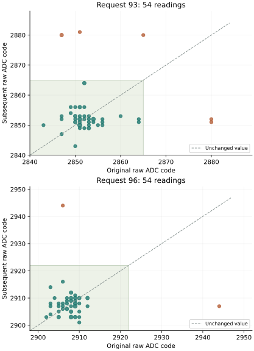
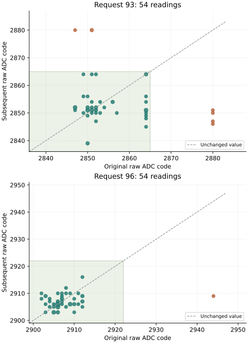
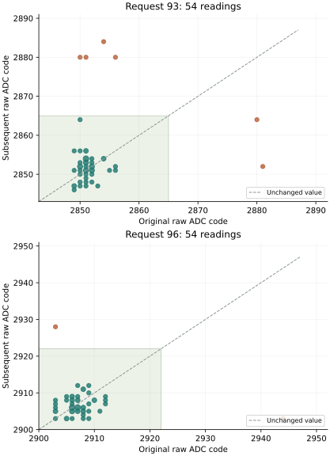
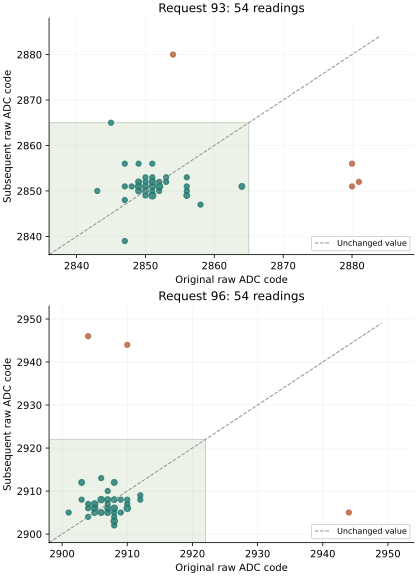

SECOND BOOT / PREPARED 2 OCTOBER 2026
Trigger-only recurrence across boots
The first trigger-only return changed 93/108 values without the additional cleanup; cleanup plus trigger changed 94/108, while rereading changed none. Trigger-only moved five exceptional readings into the intended interval and introduced three new exceptions. All 72 reference medians passed, but one original held triple, 2852, 2880 and 2880, left 107/108 held medians correct under each frozen rule.
This second boot tests recurrence with unchanged requests, hold order, frozen bounds, original zero added wait, four/eight-millisecond intervention slots and diagnostics. All 72 instruction regions and 161 image inputs match the first preparation. Its 292 frozen validated source files are preserved. The payload differs only in the 32-byte run identity; fresh journal reservations contain no acquired records. The preceding physical return remains archived.
Compare boots separately by request, condition, visit and initialization/later exposure. Report changed values, both directions of exceptional/in-band transition, subsequent pair agreement, native operation omissions, statuses and timing. Preserve original reference and held median failures. Do not replace originals with subsequent readings, refit bounds, require the same exception positions or pool correlated readings as independent trials.
Recording requires all 540 originals, 324 interventions, 648 subsequent pairs and 26,458 native records, with restoration, release, footers and terminal record. Assess original reset/configuration timing and intervention timing separately. Each frozen rule requires 72/72 correct reference medians and 108/108 correct original held medians. A complete journal or recurring update pattern cannot substitute for these recognition criteria or independently establish analog conversion freshness.
The powered allowance remains 22 minutes; the first trigger-only terminal timestamp was 1,077.058 seconds. Actual completion must be established from the returned records. Preparation A210B1AB130F reuses the successful 40-check execution validation after frozen-source and payload comparisons. The second physical return is complete.
SD written and verified with 6,144 transfer checks and two matching full readbacks while locked, then ejected. The full pre-write backup matches the archived first return. The returned recording is complete.
Second-boot protocol · Unchanged-input comparison · Manifest · Validation · SD verification · Preparation index
SECOND PHYSICAL RETURN / 2 OCTOBER 2026
Updates recur; raw exceptions remain
Trigger-only changed 99/108 values in boot 2, compared with 93/108 in boot 1. Cleanup plus trigger changed 94/108 in each boot. Rereading changed none in either boot. Both returns therefore show result updates without the additional cleanup immediately before the additional trigger. The initial original conversion and final cleanup remain part of the tested sequence.
All 540 originals, 324 interventions, 648 subsequent pairs and 26,458 native records were recovered. Recording, restoration, release and timing passed. This boot passed all 72 reference medians and 108 original held medians under every frozen rule. Boot 1's unresolved held median remains a failed observation; complete original recognition did not recur across both boots.
| Condition | Boot 1 changed / 108 | Boot 2 changed / 108 | Boot 1 exceptions: original → later | Boot 2 exceptions: original → later |
|---|---|---|---|---|
| Read again | 0 | 0 | 4 → 4 | 4 → 4 |
| Trigger only | 93 | 99 | 5 → 3 | 3 → 5 |
| Cleanup + trigger | 94 | 94 | 4 → 4 | 8 → 1 |
Each condition contains 108 original readings. An exception lies outside the intended interval under at least one frozen rule. Later totals count the first subsequent pair; both subsequent pairs agreed in all 324 interventions. Both original pairs also agreed in all 540 acquisitions. Counts and raw codes are decimal.
In boot 2, trigger-only moved three original exceptions into the intended interval but produced five new exceptions. Cleanup plus trigger moved eight original exceptions into the interval and produced one new exception. Boot 1 had three new trigger-only exceptions and four new cleanup-plus-trigger exceptions. The direction of the difference between these totals reversed; neither sequence is established as more reliable.
| Request | Condition | Original exceptions / 54 | Changed / 54 | Later exceptions / 54 |
|---|---|---|---|---|
| 93 | Read again | 3 | 0 | 3 |
| 93 | Cleanup + trigger | 4 | 45 | 1 |
| 93 | Trigger only | 2 | 50 | 4 |
| 96 | Read again | 1 | 0 | 1 |
| 96 | Cleanup + trigger | 4 | 49 | 0 |
| 96 | Trigger only | 1 | 49 | 1 |

Passing medians and exceptional individual readings
Fifteen original held readings were exceptional, compared with thirteen in boot 1. No original held triple contained more than one exceptional member in boot 2, so every held median passed. In boot 1, the triple 2852, 2880, 2880 had two exceptional members and an unresolved median. The changed grouping outcome does not establish a reduction in individual-reading exceptions.
The minimum margin among correct held medians remained 8, 4, 5 and 1 codes under A baseline, A candidate, B baseline and B candidate. Eight distinct reference readings were exceptional under at least one rule, while all reference medians passed.
| Frozen rule | Reference C/M/U (216) | Held original C/M/U (324) | Reference medians | Held medians |
|---|---|---|---|---|
| A baseline | 211 / 1 / 4 | 309 / 6 / 9 | 72/72 | 108/108 |
| A candidate | 208 / 0 / 8 | 309 / 0 / 15 | 72/72 | 108/108 |
| B baseline | 209 / 0 / 7 | 309 / 0 / 15 | 72/72 | 108/108 |
| B candidate | 208 / 0 / 8 | 309 / 0 / 15 | 72/72 | 108/108 |
C/M/U denotes correct, mismatch and unresolved. No observation was unavailable. All exceptional held originals and follow-ups occurred after initialization. At request 96, code 2944 is a mismatch under A baseline and unresolved under the other rules. At request 93, codes 2880 and 2881 are unresolved under all four.
One trigger-only request-96 reading changed from 2906 to 2944 at visit 3, ordinal 64. The later exceptional value agrees in both subsequent pairs. Thus the extra trigger does not provide a dependable correction operation, even in a boot whose original median criteria pass.
All exceptional original and subsequent held readings
The table contains all 21 episodes with an original or subsequent exception, including six newly exceptional follow-ups. Ordinals are zero-based within each visit. Identical subsequent pairs are shown once.
| Visit / ordinal | Request | Condition | Original | Later pair | Transition |
|---|---|---|---|---|---|
| 1/21 | 96 | Trigger only | 2944 | 2907 | Exceptional → in-band |
| 1/39 | 93 | Cleanup + trigger | 2850 | 2880 | In-band → exceptional |
| 1/40 | 93 | Cleanup + trigger | 2880 | 2849 | Exceptional → in-band |
| 1/53 | 93 | Cleanup + trigger | 2880 | 2847 | Exceptional → in-band |
| 1/82 | 93 | Trigger only | 2851 | 2881 | In-band → exceptional |
| 1/93 | 96 | Cleanup + trigger | 2944 | 2908 | Exceptional → in-band |
| 1/99 | 96 | Cleanup + trigger | 2944 | 2909 | Exceptional → in-band |
| 2/32 | 93 | Cleanup + trigger | 2880 | 2851 | Exceptional → in-band |
| 2/38 | 96 | Cleanup + trigger | 2944 | 2909 | Exceptional → in-band |
| 2/56 | 93 | Trigger only | 2865 | 2880 | In-band → exceptional |
| 2/107 | 93 | Read again | 2880 | 2880 | Exceptional → exceptional |
| 3/3 | 93 | Trigger only | 2880 | 2851 | Exceptional → in-band |
| 3/6 | 93 | Trigger only | 2847 | 2880 | In-band → exceptional |
| 3/7 | 93 | Trigger only | 2880 | 2852 | Exceptional → in-band |
| 3/9 | 93 | Trigger only | 2847 | 2880 | In-band → exceptional |
| 3/34 | 96 | Cleanup + trigger | 2944 | 2906 | Exceptional → in-band |
| 3/47 | 93 | Read again | 2880 | 2880 | Exceptional → exceptional |
| 3/49 | 93 | Read again | 2880 | 2880 | Exceptional → exceptional |
| 3/64 | 96 | Trigger only | 2906 | 2944 | In-band → exceptional |
| 3/87 | 93 | Cleanup + trigger | 2880 | 2853 | Exceptional → in-band |
| 3/105 | 96 | Read again | 2944 | 2944 | Exceptional → exceptional |
Initialization, later readings and individual visits
Each request/condition has three initialization readings and 51 later readings across three visits. Every visit/request/condition has eighteen readings. These exposures remain separate; the counts are not independent-trial error estimates.
| Request | Condition | First / later readings | Original exceptions: first / later | Changed: first / later | Later exceptions: first / later |
|---|---|---|---|---|---|
| 93 | Read again | 3 / 51 | 0 / 3 | 0 / 0 | 0 / 3 |
| 93 | Trigger only | 3 / 51 | 0 / 2 | 3 / 47 | 0 / 4 |
| 93 | Cleanup + trigger | 3 / 51 | 0 / 4 | 3 / 42 | 0 / 1 |
| 96 | Read again | 3 / 51 | 0 / 1 | 0 / 0 | 0 / 1 |
| 96 | Trigger only | 3 / 51 | 0 / 1 | 2 / 47 | 0 / 1 |
| 96 | Cleanup + trigger | 3 / 51 | 0 / 4 | 3 / 46 | 0 / 0 |
| Visit | Request | Condition | Original exceptions / 18 | Changed / 18 | Later exceptions / 18 |
|---|---|---|---|---|---|
| 1 | 93 | Read again | 0 | 0 | 0 |
| 1 | 93 | Trigger only | 0 | 16 | 1 |
| 1 | 93 | Cleanup + trigger | 2 | 16 | 1 |
| 1 | 96 | Read again | 0 | 0 | 0 |
| 1 | 96 | Trigger only | 1 | 16 | 0 |
| 1 | 96 | Cleanup + trigger | 2 | 14 | 0 |
| 2 | 93 | Read again | 1 | 0 | 1 |
| 2 | 93 | Trigger only | 0 | 17 | 1 |
| 2 | 93 | Cleanup + trigger | 1 | 14 | 0 |
| 2 | 96 | Read again | 0 | 0 | 0 |
| 2 | 96 | Trigger only | 0 | 17 | 0 |
| 2 | 96 | Cleanup + trigger | 1 | 17 | 0 |
| 3 | 93 | Read again | 2 | 0 | 2 |
| 3 | 93 | Trigger only | 2 | 17 | 2 |
| 3 | 93 | Cleanup + trigger | 1 | 15 | 0 |
| 3 | 96 | Read again | 1 | 0 | 1 |
| 3 | 96 | Trigger only | 0 | 16 | 1 |
| 3 | 96 | Cleanup + trigger | 1 | 18 | 0 |
Native diagnostics and recording completion
The 2,592 intervention events contain 2,268 physical transfers and 324 explicit omissions, with no inhibited or failed event. Trigger-only records an omitted cleanup and actual trigger write. Every first busy read returned zero and every following status read returned one; no busy transition was observed. Original final cleanup completed in every acquisition.
The 4 ms slots measured 4,000.000–4,001.389 µs, and the 8 ms slots 8,000.000–8,001.538 µs. Overshoot remained below 1.54 µs against the declared 50 µs limit. The original second pair to first subsequent pair interval was 16.470–16.622 ms; the subsequent pairs were separated by 4.464–4.598 ms. Recorded access intervals do not independently measure analog conversion duration.
All 23,592 CPU/pin snapshots retained the same observed pending flags, interrupt masks, exception level, GPIO routing, direction and line states as boot 1. The 125,649 quiet-pin samples contained no observed transition or unexpected routing. The maximum within-quiet gap was 7.315 µs; the conservative bound between consecutive snapshots within an acquisition reached 21.119 ms. These observations do not exclude activity between samples or determine the analog source of an exception.
The configured 54 MHz counter places acquisition at 34.914 seconds and the terminal timestamp at 1,076.916 seconds, approximately 17 minutes 57 seconds. The terminal timestamp precedes its own write/readback and is not total powered duration. Two read-only SD captures match. Boot instructions and configuration are unchanged; seven boot-volume metadata sectors changed without identifying their writer or time.
Consequence for the next comparison
Two boots support updates without the additional preceding cleanup. Both also contain retained exceptions under rereading and newly exceptional values after triggering. These outcomes narrow the tested operation sequence but do not establish the origin of the codes, independent analog freshness or a generally reliable recovery rule.
A proposed next comparison is a fixed-length sequence of trigger-only updates at the held requests, alongside a duration-matched single-trigger control. Schedule the same number of observations regardless of whether a value is exceptional, preserve every original and later pair, and retain the original zero added wait. This would test persistence and recurrence across successive updates without the intervening full acquisition sequence. It would not be a retry-until-success procedure or a replacement for the original recognition criteria.
The existing reversed-byte and additional-snapshot comparison and within-bit sampling comparison already address parts of the read path. A further intervention should add a distinct observable contrast. Recognition bounds and Hyphos validity requirements remain unchanged by this return.
Second-boot evidence and reconstruction
Preparation A210B1AB130F preserves the first boot's 72 instruction regions, 161 image inputs and 292 frozen validated sources. Its 301 indexed artifacts were checked before acquisition. Two read-only captures of the first 96 MiB agree, with medium identity checked before and after. The reader frozen before execution decodes the complete recording; the current reader reproduces it exactly.
Ten return checks cover the two trigger-only boots. Independent reconstruction from journal octets and native event words verifies the value transitions, original medians, operation omissions, status reads, measured slots and sampled signals. Duplicate or incomplete boots cannot qualify the comparison. Software checks do not replace the physical outcomes.
Capture SHA-256: b1e8523dbb3f39816874ea956da80601b2deaf8a582424c58d99ffa8912afeb5.
Acquisition record · Decoded journal · Observation analysis · Comparison between boots · Provenance · Boot-volume comparison · Return index · Return checks
EXPERIMENT / DECLARED 2 OCTOBER 2026
Trigger without preceding cleanup
Does another trigger update the retained result when the preceding status cleanup is omitted?
The two retained-result returns changed no values under rereading or cleanup alone. Cleanup plus trigger changed 96/108 and 94/108 values, including transitions both into and out of the intended interval. These returns associate updates with adding a trigger to that sequence, but do not establish whether cleanup is required before the trigger. This comparison separates that remaining operation while preserving every original and later reading.
The second boot also accepted only 71/72 reference medians under every frozen rule: request 93 produced 2880, 2852 and 2884, with unresolved median 2880. Its 108 held medians passed. Reference qualification remains an independent requirement; subsequent in-band readings cannot repair this failure.
PHYSICAL RETURN / 2 OCTOBER 2026
Updates without the additional cleanup
Trigger-only changed 93/108 values; cleanup plus trigger changed 94/108. Rereading changed none. The additional cleanup immediately before the additional trigger was not necessary for those observed updates. Every original acquisition retained its initial cleanup, and the original final cleanup followed the intervention.
All 540 originals, 324 interventions, 648 subsequent pairs and 26,458 native records were recovered. Recording, restoration, release and measured timing passed. Recognition qualification was not met: all four frozen rules accepted 72/72 reference medians and 107/108 original held medians. One request-93 triple contained two exceptional readings.
| Condition | Changed / 108 | Original exceptions | Later exceptions | Exceptional → in-band | In-band → exceptional |
|---|---|---|---|---|---|
| Read again | 0 | 4 | 4 | 0 | 0 |
| Trigger only | 93 | 5 | 3 | 5 | 3 |
| Cleanup + trigger | 94 | 4 | 4 | 4 | 4 |
Each condition has 108 original readings. An exception is outside the intended interval under at least one frozen rule. Each later count refers to the first subsequent pair; both subsequent pairs agreed in all 324 interventions. All 540 original pair comparisons also agreed. Counts and raw codes are decimal.
The five trigger-only original exceptions became in-band, while three other readings became exceptional after triggering. Cleanup plus trigger retained the same distinction: four transitions into the interval and four new exceptions. These totals do not demonstrate a reliable recovery operation or superiority of either trigger sequence.
| Request | Condition | Original exceptions / 54 | Changed / 54 | Later exceptions / 54 |
|---|---|---|---|---|
| 93 | Read again | 2 | 0 | 2 |
| 93 | Trigger only | 4 | 47 | 3 |
| 93 | Cleanup + trigger | 4 | 44 | 4 |
| 96 | Read again | 2 | 0 | 2 |
| 96 | Trigger only | 1 | 46 | 0 |
| 96 | Cleanup + trigger | 0 | 50 | 0 |

Consecutive exceptions defeat one original median
In visit 1, trigger-only request 93, original ordinals 78–80 were 2852, 2880 and 2880. Their median, 2880, is unresolved under every frozen rule. It exceeds the intended upper bounds by 8, 12, 11 and 15 codes under A baseline, A candidate, B baseline and B candidate respectively. Later pairs at these ordinals were 2851, 2847 and 2851; they remain separate observations and cannot replace the failed original median.
The four original trigger-only request-93 exceptions all occurred in the same eighteen-reading hold, at ordinals 79, 80, 83 and 89. Two subsequent exceptions also occurred consecutively in visit 2, at ordinals 69 and 70. This clustering prevents an assumption that each reading fails independently. The minimum margin among correctly recognized held medians was 8, 4, 5 and 1 codes under the four rules.
| Frozen rule | Reference C/M/U (216) | Held original C/M/U (324) | Reference medians | Held medians |
|---|---|---|---|---|
| A baseline | 212 / 1 / 3 | 311 / 3 / 10 | 72/72 | 107/108 |
| A candidate | 210 / 1 / 5 | 311 / 0 / 13 | 72/72 | 107/108 |
| B baseline | 211 / 1 / 4 | 311 / 0 / 13 | 72/72 | 107/108 |
| B candidate | 208 / 1 / 7 | 311 / 0 / 13 | 72/72 | 107/108 |
C/M/U denotes correct, mismatch and unresolved. No original observation was unavailable. Eight distinct reference readings and thirteen distinct held readings were exceptional under at least one rule. At request 96, code 2944 is a mismatch under A baseline and unresolved under the other rules; request-93 code 2880 is unresolved under all four.
All exceptional original and subsequent readings
The table contains all twenty held episodes with an original or subsequent exception, including seven new subsequent exceptions. Ordinals are zero-based within each visit; identical subsequent pairs are shown once.
| Visit / ordinal | Request | Condition | Original | Later pair | Initialization | Transition |
|---|---|---|---|---|---|---|
| 1/6 | 93 | Read again | 2880 | 2880 | No | Exceptional → exceptional |
| 1/36 | 93 | Cleanup + trigger | 2880 | 2853 | Yes | Exceptional → in-band |
| 1/51 | 93 | Cleanup + trigger | 2852 | 2880 | No | In-band → exceptional |
| 1/52 | 93 | Cleanup + trigger | 2880 | 2852 | No | Exceptional → in-band |
| 1/57 | 96 | Read again | 2944 | 2944 | No | Exceptional → exceptional |
| 1/79 | 93 | Trigger only | 2880 | 2847 | No | Exceptional → in-band |
| 1/80 | 93 | Trigger only | 2880 | 2851 | No | Exceptional → in-band |
| 1/83 | 93 | Trigger only | 2880 | 2850 | No | Exceptional → in-band |
| 1/89 | 93 | Trigger only | 2880 | 2846 | No | Exceptional → in-band |
| 2/27 | 93 | Cleanup + trigger | 2847 | 2880 | No | In-band → exceptional |
| 2/28 | 93 | Cleanup + trigger | 2880 | 2851 | No | Exceptional → in-band |
| 2/31 | 93 | Cleanup + trigger | 2880 | 2847 | No | Exceptional → in-band |
| 2/69 | 93 | Trigger only | 2851 | 2880 | No | In-band → exceptional |
| 2/70 | 93 | Trigger only | 2851 | 2880 | No | In-band → exceptional |
| 2/105 | 93 | Read again | 2880 | 2880 | No | Exceptional → exceptional |
| 3/16 | 93 | Trigger only | 2847 | 2880 | No | In-band → exceptional |
| 3/57 | 96 | Trigger only | 2944 | 2909 | No | Exceptional → in-band |
| 3/79 | 93 | Cleanup + trigger | 2851 | 2880 | No | In-band → exceptional |
| 3/83 | 93 | Cleanup + trigger | 2850 | 2880 | No | In-band → exceptional |
| 3/107 | 96 | Read again | 2944 | 2944 | No | Exceptional → exceptional |
Initialization, later readings and individual visits
Each request/condition contains three initialization readings and 51 later readings. The only exceptional initialization reading was visit 1, ordinal 36, under cleanup plus trigger. Each visit/request/condition contains eighteen readings.
| Request | Condition | Original exceptions: first / later | Changed: first / later |
|---|---|---|---|
| 93 | Read again | 0 / 2 | 0 / 0 |
| 93 | Trigger only | 0 / 4 | 2 / 45 |
| 93 | Cleanup + trigger | 1 / 3 | 3 / 41 |
| 96 | Read again | 0 / 2 | 0 / 0 |
| 96 | Trigger only | 0 / 1 | 2 / 44 |
| 96 | Cleanup + trigger | 0 / 0 | 3 / 47 |
| Visit | Request | Condition | Original exceptions / 18 | Changed / 18 | Later exceptions / 18 |
|---|---|---|---|---|---|
| 1 | 93 | Read again | 1 | 0 | 1 |
| 1 | 93 | Trigger only | 4 | 15 | 0 |
| 1 | 93 | Cleanup + trigger | 2 | 15 | 1 |
| 1 | 96 | Read again | 1 | 0 | 1 |
| 1 | 96 | Trigger only | 0 | 13 | 0 |
| 1 | 96 | Cleanup + trigger | 0 | 18 | 0 |
| 2 | 93 | Read again | 1 | 0 | 1 |
| 2 | 93 | Trigger only | 0 | 17 | 2 |
| 2 | 93 | Cleanup + trigger | 2 | 15 | 1 |
| 2 | 96 | Read again | 0 | 0 | 0 |
| 2 | 96 | Trigger only | 0 | 15 | 0 |
| 2 | 96 | Cleanup + trigger | 0 | 16 | 0 |
| 3 | 93 | Read again | 0 | 0 | 0 |
| 3 | 93 | Trigger only | 0 | 15 | 1 |
| 3 | 93 | Cleanup + trigger | 0 | 14 | 2 |
| 3 | 96 | Read again | 1 | 0 | 1 |
| 3 | 96 | Trigger only | 1 | 18 | 0 |
| 3 | 96 | Cleanup + trigger | 0 | 16 | 0 |
Native access and timing observations
The journal contains 2,592 intervention events: 2,268 physical transfers and 324 explicit omissions, with no inhibited or failed event. Trigger-only recorded an omitted cleanup and an actual trigger write in every intervention. Every first busy read returned zero and every following status read returned one; no busy transition was observed. All original final cleanups completed.
The 4 ms slots measured 4,000.000–4,001.519 µs, and the 8 ms slots 8,000.000–8,001.426 µs. Maximum overshoot remained below 1.52 µs against the declared 50 µs limit. The original second pair to first subsequent pair interval was 16.470–16.582 ms; the two subsequent pairs were separated by 4.463–4.578 ms. These intervals describe recorded access timing, not an independently measured ADC conversion duration.
All 23,592 CPU/pin snapshots retained the same observed fields: no pending interrupt indication, unchanged interrupt masks and exception level, and the expected released GPIO routing, direction and line state. The 125,641 quiet-pin samples contained no observed transition or unexpected routing. The maximum within-quiet sampling gap was 5.649 µs; across consecutive snapshots within an acquisition, the conservative gap bound reached 21.087 ms. These sampled observations do not exclude activity between samples or identify an analog cause.
The configured 54 MHz counter places acquisition at 34.914 seconds and the terminal timestamp at 1,077.058 seconds, approximately 17 minutes 57 seconds. The terminal timestamp precedes its own write/readback and does not measure total powered duration. Both read-only SD captures match. Boot instructions and configuration are unchanged; seven boot-volume metadata sectors changed without identifying their writer or time.
What this comparison establishes
The retained result can update after the additional trigger without the additional preceding cleanup in this tested sequence. Rereading alone retained every value, including four exceptions. The comparison narrows the operation associated with updates, while leaving the cause of the exceptional codes unresolved.
Neither trigger sequence guarantees an in-band subsequent result. The one-code minimum accepted margin and failed original median remain relevant to Hyphos observation validity. A new digital value, agreement between pairs and a successful status read do not independently establish analog conversion freshness.
The next proposed comparison is an unchanged second boot with a fresh identity and journal reservation. Keep the original zero added wait, request schedule, frozen bounds, matched intervention slots and diagnostics. Assess recurrence by request, visit and initialization/later exposure before changing recognition or acquisition policy. One boot cannot establish equivalent reliability between the two trigger conditions or attribute the original failure to condition 4.
Returned evidence and reconstruction
Preparation FCF20E35C117 retains 301 indexed artifacts. Two read-only captures of the first 96 MiB agree, with device identity checked before and after acquisition. The reader frozen before execution decodes the complete journal; the current reader reproduces that analysis exactly. Five return checks independently reconstruct raw octets, transitions, the failed original median, native omissions, statuses, timestamps and sampled signals. Altered trigger/cleanup traces are rejected.
Capture SHA-256: 1f746f6fdee518ab5f4d85f47e4683b6bb4f113899edc7f35c818320ebec46cc.
Acquisition record · Decoded journal · Observation analysis · Provenance · Boot-volume comparison · Return index · Return checks
Matched cleanup and trigger comparison
Condition 4 replaces condition 1 in the preceding schedule. Conditions 0 and 2 remain the concurrent controls. Counts, requests, ADC values and intervals here are decimal; register addresses and instruction words are hexadecimal. Native records retain their senary encoding.
| Condition | Cleanup slot, 4 ms | Trigger/status slot, 8 ms | Following observations |
|---|---|---|---|
| 0: read again | Cleanup omitted and recorded | Trigger omitted; read busy and status | Two low/high result pairs |
| 4: trigger only | Cleanup omitted and recorded | Write 0x8018=1; bounded busy reads, then status | Two low/high result pairs |
| 2: cleanup + trigger | Write 0x801b=3 | Write 0x8018=1; bounded busy reads, then status | Two low/high result pairs |
Each intervention occurs after the successful second original result pair and before the original final cleanup. The original acquisition retains zero added trigger-relative wait. The initial original conversion still has its established cleanup; condition 4 omits only the additional cleanup immediately before the additional trigger. Every held reading receives its scheduled intervention regardless of its value. No reset, enable, selector or request write is added.
The 216 reference acquisitions retain 36 readings at each request 90, 93, 96, 99, 102 and 105, with no intervention. The 324 held acquisitions use requests 93 and 96. Each request/condition has three eighteen-reading holds: 54 original readings and 18 original medians. Initialization and the following 17 readings in each hold remain separate. Original reset and configuration policies, frozen bounds, request order and hold positions are unchanged.
| Visit | Ordered request / condition holds |
|---|---|
| 1 | 93/0, 96/4, 93/2, 96/0, 93/4, 96/2 |
| 2 | 96/0, 93/2, 96/2, 93/4, 96/4, 93/0 |
| 3 | 93/4, 96/2, 93/0, 96/4, 93/2, 96/0 |
All conditions retain the same minimum slot durations and 50 µs maximum overshoot criterion. After either added trigger, at most four busy reads are allowed; condition 0 stops at its first busy observation. Busy or ADC error stops result acquisition and attempts the original final cleanup. Transport or sampled pin failure inhibits further intervention access. Restoration and native persistence remain attempted. The trace preserves unavailable observations, failure reasons, actual transfers, omissions, CPU/pin snapshots and measured intervals. Slot overrun remains visible and fails timing qualification.
Assessment and interpretation
Recording requires all 540 originals, 324 interventions, 648 subsequent pairs and 26,458 native records, with successful restoration, release, footers and terminal record. Original reset/configuration timing and intervention timing are assessed separately. Each of the four frozen rules requires all 72 reference medians and all 108 original held medians to be correct. Preserve raw failures and unresolved medians; do not substitute a later result or refit a boundary.
Compare conditions 4 and 2 for changed digital values, status observations, busy-read counts, available pairs and transitions into or out of each intended interval. Condition 0 measures rereading under the common observation interval. Report each request, visit and initialization/later exposure separately, including distances from the frozen bounds. Agreement between later pairs is a separate observation. An unchanged value can follow a new conversion; a changed value alone does not prove independent analog freshness.
Updates in condition 4 would show that the additional cleanup was not necessary for those observed updates. Updates only in condition 2 would support a dependence on that cleanup under the tested sequence and timing. Busy/error differences would identify an observable access-sequence constraint. Shared exceptions would leave analog conversion, result retention and transport interpretation unresolved. These are possible outcomes, not predetermined device semantics. The schedule balances early, middle and late hold positions but not every predecessor; clustered observations do not establish independent-trial error probabilities.
This comparison informs how native observations retain their operation history and validity before being used by Hyphos. It does not change Seigsit creation rules or qualify every silicon cluster.
Implementation and preparation
The existing AArch64 entry executes literal SEIGRASM words. Eight instruction words in retake add condition 4 while retaining all instruction addresses, interfaces and the preceding 71 instruction regions. The sample entry delegates the original acquisition; the write entry intervenes before final cleanup, using the existing register read/write and pin-observation operations. The same native journal stores the original and additional rows. PC tooling copies the literal words, constructs contexts and reservations, supplies validation responses and decodes records; it does not compile target instructions. Boot firmware, fixed component addresses and incompletely established PMIC semantics remain apparatus dependencies.
Preparation FCF20E35C117 passed all 40 supplied-device execution and archived-return checks. The SD passed 6,144 transfer checks and two matching full readbacks while locked, then was successfully ejected. The complete pre-write backup matches the archived preceding return. The physical return is complete; one original held median remains unresolved. The powered allowance is 22 minutes: both preceding journals of the same size reached their terminal counter near 1,077 seconds. Completion must be established from the returned records.
Image SHA-256: 635d186424de845a47fd3224d005e5fc9198fb5afd7a15810b82376af18dbf55.
Frozen protocol · Manifest · Validation · Controlled changes · SD verification · Preparation index
SECOND BOOT / PREPARED 2 OCTOBER 2026
Unchanged comparison across boots
The first return associated result updates with an added trigger, including transitions into and out of the intended interval. A second boot tests recurrence of this pattern with the same requests, hold order, frozen recognition bounds, original zero added wait, intervention slots and diagnostics. Each boot retains its original and subsequent observations separately; no rule is refitted and no exceptional value is replaced.
Preparation D170676AB050 preserves all 72 instruction regions and 288 validated sources. Its payload differs only in the 32-byte run identity. Fresh journal reservations contain no acquired records. The successful 20-check software validation is reused after checking its source hashes; these preparation checks do not establish physical recurrence.
Compare changed-value counts and exceptional-to-in-band/in-band-to-exceptional transitions by request, condition, visit and initialization/later exposure for each boot. Exact counts and positions need not recur. Too few exceptions cannot establish a remedy; unchanged or changed digital values do not independently establish analog conversion freshness.
SD written and verified with 6,144 chunk checks and two matching full readbacks while locked, then ejected. Its pre-write backup matches the complete archived first return. The second physical return is complete. The powered allowance remains 22 minutes. The same 540 originals, 324 interventions, 648 subsequent pairs and 26,458 native records are planned.
Second-boot protocol · Unchanged-input comparison · Manifest · Validation · SD verification · Preparation index
SECOND PHYSICAL RETURN / 2 OCTOBER 2026
Updates recur; reference qualification fails
The second boot repeats trigger-associated changes, including changes into and out of the intended interval. Rereading and cleanup alone changed no values. Cleanup plus trigger changed 94/108 values, compared with 96/108 in boot 1. Its three original exceptions became in-band, while five original in-band readings became exceptional. Both later pairs agreed in every intervention.
All 540 originals, 324 interventions, 648 subsequent pairs and 26,458 records were recovered. Recording, restoration, release and timing passed. The full recognition qualification was not met: each frozen rule accepted 71/72 reference medians, while all 108 held medians passed. The reference failure remains separate from the observed update behavior.
| Condition | Boot 1 changed / 108 | Boot 2 changed / 108 | Boot 1 exceptions: original → later | Boot 2 exceptions: original → later |
|---|---|---|---|---|
| Read again | 0 | 0 | 2 → 2 | 2 → 2 |
| Cleanup only | 0 | 0 | 3 → 3 | 3 → 3 |
| Cleanup + trigger | 96 | 94 | 4 → 3 | 3 → 5 |
Each condition contains 108 original observations and two later pairs per observation. The later exception column counts the first subsequent pair; the second gives identical values. Counts are decimal. An exception means outside the intended interval under at least one frozen rule. Original and later exceptions identify different events in the trigger condition: the smaller or larger later total is not a count of corrected originals.
| Request | Condition | Original exceptions / 54 | Changed / 54 | Later exceptions / 54 |
|---|---|---|---|---|
| 93 | Read again | 1 | 0 | 1 |
| 93 | Cleanup only | 2 | 0 | 2 |
| 93 | Cleanup + trigger | 2 | 45 | 4 |
| 96 | Read again | 1 | 0 | 1 |
| 96 | Cleanup only | 1 | 0 | 1 |
| 96 | Cleanup + trigger | 1 | 49 | 1 |

Reference failure and individual transitions
At reference request 93, ordinals 57–59 contain 2880, 2852 and 2884. Their median is 2880. It exceeds the upper intended bounds by 8, 12, 11 and 15 raw codes under A baseline, A candidate, B baseline and B candidate respectively; all classify it as unresolved. Both original pairs agree at each of these readings. This reference sequence has no added intervention. Two exceptional members in one triple defeat median-of-three recognition here.
The original raw and median results remain distinct. C/M/U denotes correct, mismatch and unresolved; no original observation was unavailable. Eleven distinct reference readings were exceptional under at least one rule.
| Frozen rule | Reference C/M/U (216) | Held original C/M/U (324) | Reference medians | Held medians |
|---|---|---|---|---|
| A baseline | 210 / 1 / 5 | 316 / 3 / 5 | 71/72 | 108/108 |
| A candidate | 207 / 1 / 8 | 316 / 0 / 8 | 71/72 | 108/108 |
| B baseline | 209 / 1 / 6 | 316 / 0 / 8 | 71/72 | 108/108 |
| B candidate | 205 / 1 / 10 | 316 / 0 / 8 | 71/72 | 108/108 |
Every held exception in this return occurred after hold initialization. The table contains all eight original held exceptions and all five newly exceptional trigger follow-ups. Ordinals are zero-based within each visit. The identical subsequent pairs are shown once.
| Visit / ordinal | Request | Condition | Original | Later pair | Transition |
|---|---|---|---|---|---|
| 1/33 | 96 | Cleanup only | 2944 | 2944 | Exceptional → exceptional |
| 1/42 | 93 | Cleanup + trigger | 2881 | 2852 | Exceptional → in-band |
| 1/50 | 93 | Cleanup + trigger | 2856 | 2880 | In-band → exceptional |
| 2/20 | 93 | Cleanup + trigger | 2854 | 2884 | In-band → exceptional |
| 2/25 | 93 | Cleanup + trigger | 2880 | 2864 | Exceptional → in-band |
| 2/35 | 93 | Cleanup + trigger | 2850 | 2880 | In-band → exceptional |
| 2/41 | 96 | Cleanup + trigger | 2903 | 2928 | In-band → exceptional |
| 2/43 | 96 | Cleanup + trigger | 2944 | 2903 | Exceptional → in-band |
| 2/57 | 93 | Cleanup only | 2880 | 2880 | Exceptional → exceptional |
| 3/7 | 93 | Cleanup only | 2880 | 2880 | Exceptional → exceptional |
| 3/37 | 93 | Read again | 2882 | 2882 | Exceptional → exceptional |
| 3/75 | 93 | Cleanup + trigger | 2851 | 2880 | In-band → exceptional |
| 3/101 | 96 | Read again | 2944 | 2944 | Exceptional → exceptional |
At request 96, original values of 2944 are mismatches under A baseline and unresolved under the other rules. The subsequent 2928 is unresolved under all four rules. At request 93, the recorded exceptional values 2880, 2881, 2882 and 2884 are unresolved under all four rules. In the trigger condition, 100 observations stayed in-band, three moved into the intended interval and five moved out of it.
Visit and initialization exposure
| Visit | Request | Condition | Original exceptions / 18 | Changed / 18 | Later exceptions / 18 |
|---|---|---|---|---|---|
| 1 | 93 | Read again | 0 | 0 | 0 |
| 1 | 93 | Cleanup only | 0 | 0 | 0 |
| 1 | 93 | Cleanup + trigger | 1 | 14 | 1 |
| 1 | 96 | Read again | 0 | 0 | 0 |
| 1 | 96 | Cleanup only | 1 | 0 | 1 |
| 1 | 96 | Cleanup + trigger | 0 | 17 | 0 |
| 2 | 93 | Read again | 0 | 0 | 0 |
| 2 | 93 | Cleanup only | 1 | 0 | 1 |
| 2 | 93 | Cleanup + trigger | 1 | 13 | 2 |
| 2 | 96 | Read again | 0 | 0 | 0 |
| 2 | 96 | Cleanup only | 0 | 0 | 0 |
| 2 | 96 | Cleanup + trigger | 1 | 17 | 1 |
| 3 | 93 | Read again | 1 | 0 | 1 |
| 3 | 93 | Cleanup only | 1 | 0 | 1 |
| 3 | 93 | Cleanup + trigger | 0 | 18 | 1 |
| 3 | 96 | Read again | 1 | 0 | 1 |
| 3 | 96 | Cleanup only | 0 | 0 | 0 |
| 3 | 96 | Cleanup + trigger | 0 | 15 | 0 |
| Request | Condition | Original initialization / later exceptions | Changed initialization / later |
|---|---|---|---|
| 93 | Read again | 0 / 1 | 0 / 0 |
| 93 | Cleanup only | 0 / 2 | 0 / 0 |
| 93 | Cleanup + trigger | 0 / 2 | 2 / 43 |
| 96 | Read again | 0 / 1 | 0 / 0 |
| 96 | Cleanup only | 0 / 1 | 0 / 0 |
| 96 | Cleanup + trigger | 0 / 1 | 3 / 46 |
Each request/condition has three initialization readings and 51 later readings. All initialization observations and their follow-ups were in-band in this boot. Counts remain separated by boot and visit; they do not establish independent-trial probabilities.
Timing and native diagnostics
The added trace again contains 2,592 events: 2,268 physical transfers and 324 explicit omissions. No added transfer failed or was inhibited. Every intervention used one busy read returning zero. The subsequent status values were 1 for read again, 0 for cleanup alone and 1 for cleanup plus trigger, each in 108/108 cases. Every original final cleanup was available and succeeded. These status observations reproduce boot 1, but do not independently establish conversion freshness.
The 4 ms cleanup slots ranged from 4,000.000 to 4,001.500 µs, and the 8 ms trigger/status slots from 8,000.000 to 8,001.519 µs. All met the 50 µs maximum overshoot criterion. The first subsequent pair followed the second original pair after 16.470–16.596 ms; the two subsequent pairs were separated by 4.460–4.620 ms. Original reset and enable/selector timing also passed. Counters bracket software calls rather than electrical bus edges.
All 23,592 CPU/pin snapshots retained zero pending flags, DAIF 0x3c0, EL2 and expected PMIC pin fields. The 125,654 quiet-pin samples recorded no line transition or routing contradiction. The largest conservative within-acquisition snapshot gap bound was 21.122 ms. Sampled agreement does not exclude unsampled activity or communication elsewhere in the cluster.
Acquisition occupied 34.914 seconds. The terminal counter was 1,076.917 seconds, approximately 17 minutes 57 seconds, within the 22-minute allowance. Its timestamp precedes its own write/readback and does not measure total powered duration.
What the repeat establishes
Across both boots, repeated reads and cleanup alone preserved the digital result at every scheduled exposure. Cleanup changed the observed status, while adding a trigger was associated with changed result values in most cases. Exceptional values could be followed by in-band values, and in-band values could be followed by exceptional ones. This recurrence supports separate records for the original observation, every subsequent observation and the operations between them. It does not justify selecting only the last in-band result.
The reference median failure additionally shows that correct held medians cannot qualify the entire sequence. Wider intervals or a substituted later reading would change the declared test rather than explain its failure. Original raw pairs, reference groups and their frozen decisions therefore remain qualification inputs in the next comparison.
The next proposed comparison adds a trigger without preceding cleanup beside the current read-again and cleanup-plus-trigger conditions. The two completed boots show no result change from cleanup alone, but do not establish whether cleanup is necessary for the subsequent trigger to update the result. Retaining the same 4/8 ms slots, original zero-wait reference, requests and bounds would isolate that remaining relation. Bounded busy/error handling and the original final cleanup must remain recorded. This proposal does not assume the trigger-only sequence will succeed.
The analog source of excursions, exact conversion-completion semantics and exclusive component control remain unresolved. The SD still contains the completed second boot; no next-run image has been installed.
Second-return evidence
Two read-only acquisitions matched over all 100,663,296 bytes. All 297 preparation artifacts and 288 frozen sources matched their indexed hashes. The frozen and current readers produced identical results. Twelve checks reconstructed both boots from the native words, including the reference failure, original/later transitions, intervention commands, statuses and timing; duplicate or incomplete boots are rejected by the comparison.
Boot files and the preserved earlier journal were unchanged. Seven boot-volume sectors contain metadata changes whose writer and timing are not established. No deviation from the established procedure was reported; powered duration and boot count were not independently measured.
Capture SHA-256: ad155a4caa9b7f973e4f9fb4ac77f07a2af538725eefd3365413ea8060b7fdc7.
Frozen-reader analysis · Observations · Boot comparison · Provenance · Acquisition · Boot-volume comparison · Return index
PHYSICAL RETURN / 2 OCTOBER 2026
First boot: trigger-associated updates
Rereading and cleanup alone preserved every original value. Cleanup followed by a new trigger changed 96 of 108 values. In that third condition, all four original exceptions became in-band, but three originally in-band readings became exceptional. A new trigger therefore changes the retained digital result in this sequence; it does not provide a reliable correction policy.
Preparation 23574937B6F0 returned all 540 original acquisitions, 324 interventions, 648 subsequent result pairs and 26,458 native records. Recording, restoration, release, all footers and the terminal record passed. Original reset/configuration timing and both intervention slots met their declared criteria. Every frozen rule recognized 72/72 reference and 108/108 original held medians.
Both original pairs agreed in every acquisition. Both subsequent pairs agreed in every intervention. The counts below use the first subsequent pair; the second gives identical values and classifications. An exception is outside the intended interval under at least one frozen rule. Counts, requests, ADC values and times are decimal; register addresses are hexadecimal.
| Request | Intervention | Original exceptions | Changed first follow-up | Follow-up exceptions |
|---|---|---|---|---|
| 93 | Read again | 1/54 | 0/54 | 1/54 |
| 93 | Cleanup only | 3/54 | 0/54 | 3/54 |
| 93 | Cleanup + trigger | 3/54 | 48/54 | 1/54 |
| 96 | Read again | 1/54 | 0/54 | 1/54 |
| 96 | Cleanup only | 0/54 | 0/54 | 0/54 |
| 96 | Cleanup + trigger | 1/54 | 48/54 | 2/54 |
Each condition has 108 acquisitions, divided equally between requests 93 and 96. The original exception counts are 2/108, 3/108 and 4/108. They remain part of the original assessment regardless of later values. No follow-up was unavailable and no original result was replaced.

Individual exceptional observations
The table includes every held acquisition exceptional before or after its intervention. Ordinals are zero-based within each visit. Equal subsequent pairs are shown once.
| Visit / ordinal | Request | Intervention | Exposure | Original | Subsequent pair | Transition |
|---|---|---|---|---|---|---|
| 1/10 | 93 | Read again | Later | 2880 | 2880 | Exceptional → exceptional |
| 1/50 | 93 | Cleanup + trigger | Later | 2880 | 2851 | Exceptional → in-band |
| 1/53 | 93 | Cleanup + trigger | Later | 2854 | 2880 | In-band → exceptional |
| 1/81 | 93 | Cleanup only | Later | 2880 | 2880 | Exceptional → exceptional |
| 1/85 | 93 | Cleanup only | Later | 2880 | 2880 | Exceptional → exceptional |
| 1/98 | 96 | Cleanup + trigger | Later | 2904 | 2946 | In-band → exceptional |
| 2/2 | 96 | Read again | Later | 2944 | 2944 | Exceptional → exceptional |
| 2/29 | 93 | Cleanup + trigger | Later | 2881 | 2852 | Exceptional → in-band |
| 2/30 | 93 | Cleanup + trigger | Later | 2880 | 2856 | Exceptional → in-band |
| 2/40 | 96 | Cleanup + trigger | Later | 2944 | 2905 | Exceptional → in-band |
| 3/0 | 93 | Cleanup only | Initialization | 2880 | 2880 | Exceptional → exceptional |
| 3/25 | 96 | Cleanup + trigger | Later | 2910 | 2944 | In-band → exceptional |
Original q96 values of 2944 are mismatches under A baseline and unresolved under the other rules. The subsequent q96 value 2946 is a mismatch under A baseline and B baseline, and unresolved under both candidate rules. Values 2880 and 2881 at q93 are unresolved under every rule. A change into another state's interval is not a successful recognition of the requested state.
All three newly exceptional follow-ups occurred during later readings. Eight original exceptions were later readings; one occurred at hold initialization. In the trigger condition, 101 readings stayed in-band, four moved from exceptional to in-band, and three moved from in-band to exceptional under every rule. Twelve unchanged numeric values in that condition cannot establish absence of a new conversion: an additional conversion can produce the same digital value.
Exposure by visit and initialization
| Visit | Request | Intervention | Original exceptions | Changed follow-up | Follow-up exceptions |
|---|---|---|---|---|---|
| 1 | 93 | Read again | 1/18 | 0/18 | 1/18 |
| 1 | 93 | Cleanup only | 2/18 | 0/18 | 2/18 |
| 1 | 93 | Cleanup + trigger | 1/18 | 16/18 | 1/18 |
| 1 | 96 | Read again | 0/18 | 0/18 | 0/18 |
| 1 | 96 | Cleanup only | 0/18 | 0/18 | 0/18 |
| 1 | 96 | Cleanup + trigger | 0/18 | 15/18 | 1/18 |
| 2 | 93 | Read again | 0/18 | 0/18 | 0/18 |
| 2 | 93 | Cleanup only | 0/18 | 0/18 | 0/18 |
| 2 | 93 | Cleanup + trigger | 2/18 | 14/18 | 0/18 |
| 2 | 96 | Read again | 1/18 | 0/18 | 1/18 |
| 2 | 96 | Cleanup only | 0/18 | 0/18 | 0/18 |
| 2 | 96 | Cleanup + trigger | 1/18 | 16/18 | 0/18 |
| 3 | 93 | Read again | 0/18 | 0/18 | 0/18 |
| 3 | 93 | Cleanup only | 1/18 | 0/18 | 1/18 |
| 3 | 93 | Cleanup + trigger | 0/18 | 18/18 | 0/18 |
| 3 | 96 | Read again | 0/18 | 0/18 | 0/18 |
| 3 | 96 | Cleanup only | 0/18 | 0/18 | 0/18 |
| 3 | 96 | Cleanup + trigger | 0/18 | 17/18 | 1/18 |
| Request | Intervention | Original initialization exceptions (3) | Original later exceptions (51) | Changed initialization / later |
|---|---|---|---|---|
| 93 | Read again | 0 | 1 | 0 / 0 |
| 93 | Cleanup only | 1 | 2 | 0 / 0 |
| 93 | Cleanup + trigger | 0 | 3 | 3 / 45 |
| 96 | Read again | 0 | 1 | 0 / 0 |
| 96 | Cleanup only | 0 | 0 | 0 / 0 |
| 96 | Cleanup + trigger | 0 | 1 | 3 / 45 |
Each request/condition has three initialization and 51 later readings. Visit counts are clustered within one physical return. Their denominators describe exposures, not independent estimates of an error probability.
Original recognition remains separate
The four bounds remain those frozen before the experiment. All original medians passed; raw exceptions remain visible. C/M/U denotes correct, mismatch and unresolved. There were no unavailable original readings.
| Frozen rule | Reference raw C/M/U (216) | Held original raw C/M/U (324) | Original medians, reference / held |
|---|---|---|---|
| A baseline | 212 / 1 / 3 | 315 / 2 / 7 | 72/72 / 108/108 |
| A candidate | 208 / 0 / 8 | 315 / 0 / 9 | 72/72 / 108/108 |
| B baseline | 212 / 1 / 3 | 315 / 0 / 9 | 72/72 / 108/108 |
| B candidate | 204 / 0 / 12 | 315 / 0 / 9 | 72/72 / 108/108 |
Twelve distinct reference readings were exceptional under at least one rule. Their classification varies with the frozen interval widths. They were not used to refit a boundary or select a rule. Minimum held-median margins were 14, 10, 11 and 7 raw codes for A baseline, A candidate, B baseline and B candidate respectively.
Register sequence, measured timing and signals
All 324 interventions completed with eight recorded events: cleanup or explicit omission, trigger or explicit omission, one busy read, one status read and four result-byte reads. The added trace contains 2,268 physical transfers and 324 explicit omissions. No added transfer failed or was inhibited; every original final cleanup remained available and succeeded.
The busy read returned zero in every intervention. The subsequent status value was 1 in all 108 read-again cases, 0 in all 108 cleanup-only cases, and 1 in all 108 cleanup-plus-trigger cases. This distinguishes the observed status and result behavior: cleanup changed status without changing the result. The status meaning is not independently established as proof of conversion freshness; no busy transition was captured by these polls.
| Intervention | Cleanup slot (µs) | Trigger/status slot (µs) | Original second pair to first follow-up (ms) |
|---|---|---|---|
| Read again | 4000.056–4001.519 | 8000.019–8001.426 | 16.471–16.575 |
| Cleanup only | 4000.000–4001.481 | 8000.000–8001.315 | 16.472–16.608 |
| Cleanup + trigger | 4000.000–4001.537 | 8000.000–8001.407 | 16.471–16.582 |
All 648 slots exceeded their nominal duration by less than 1.54 µs, within the predeclared 50 µs tolerance. The subsequent pairs were separated by 4.462–4.595 ms. These intervals bracket software calls and ordered counter reads, not individual bus edges. The original acquisition uses zero added trigger-relative wait; the added slots occur after its second pair.
The native traces contain 23,592 CPU/pin snapshots: 18,408 in the original access sequence and 5,184 in the intervention. Every sampled pending field was zero, DAIF was 0x3c0 and execution remained at EL2. The observed lines and directions were both 3, with GPIO mux fields [0,0]. No sampled pin contradiction or context change occurred. Another 125,628 quiet-pin samples recorded no transition or routing contradiction. These are intermittent observations of the instrumented route, not evidence that every interconnected component was inactive. The conservative largest within-acquisition gap bound is 21.108 ms.
Acquisition occupied 34.914 seconds. The terminal counter was 1,076.838 seconds, approximately 17 minutes 57 seconds, using the recorded 54 MHz counter frequency. This lies within the 22-minute allowance. Most elapsed time belongs to persistence and its verification. The terminal timestamp precedes its own write/readback and does not measure total powered duration.
Interpretation and next comparison
The observed exceptions are retained digital results across repeated result-byte accesses, rather than disagreements between those repeated pairs. Neither the common observation interval nor status cleanup alone changed a result in this return. Adding a trigger after cleanup changed both ordinary and exceptional results. This narrows the mechanism to behavior associated with that added operation in the tested sequence, while leaving analog conversion, result latching, access semantics and transport interpretation to be distinguished.
The data do not justify a retry-until-in-band policy. Such a policy would discard original exceptions and can itself acquire a new exceptional value. Hyphos and SEIGRASM must retain the original value, later values, validity decisions and operation history as separate observations; this return supplies evidence for that recording requirement without defining a universal ADC interface.
The next comparison is an unchanged repeat of the three interventions, retaining the same requests, order, bounds, original zero-wait reference, slots and logging. Its purpose is to test recurrence across boots of unchanged reads/cleanup and bidirectional exception transitions after triggering. A new identity and empty journal distinguish the next acquisition. The second boot implements this unchanged comparison. Further inference about conversion freshness requires an independent observable tied to conversion completion or an independently varied analog input.
Recovered evidence
Two read-only acquisitions matched over all 100,663,296 bytes. The frozen reader and current reader produced identical analyses. All 297 preparation artifacts and 288 frozen source files matched their indexed hashes. Seven return checks independently reconstructed original and subsequent octets, median outcomes, exceptional transitions, omissions, timing and sampled signals, and rejected incomplete or altered records.
The boot files and preceding journal were unchanged. Seven boot-volume sectors contain metadata changes; the writer and timing are not established by the captured bytes. No deviation from the established procedure was reported. Total powered duration and boot count were not independently measured.
Capture SHA-256: f4726fd0e990ba7230fba976a99750cdda0cd292241b0c48f4ea5db5cd9fd09d.
Frozen-reader analysis · Observation comparisons · Provenance · Boot-volume comparison · Acquisition record · Return index
Question and rationale
Which operation changes a retained ADC result: reading again, status cleanup, or cleanup followed by a new trigger?
The trigger-relative timing comparison retained 2, 3 and 2 raw exceptions per 108 held readings with zero added delay, four milliseconds before the trigger and four milliseconds after status respectively. Counter records verified both delays. Neither eliminated exceptions, although all original median criteria passed in that return. Both original result pairs agreed in every acquisition.
The earlier repeated snapshots also retained exceptional values. In that timing comparison, six exceptions with successors within their visit were followed by in-band readings at the same request, but cleanup, guard checks, settling and triggering intervened. The present comparison separates three of those operations while preserving the original value. It tests observable digital update behavior; an unchanged value need not be stale, and a changed value alone does not prove an independent analog conversion.
Three scheduled interventions
Counts, requests, ADC values and times below are decimal. Addresses and opcode words are hexadecimal. Native journal encoding remains senary.
Each held acquisition first executes the established sequence with zero added trigger-relative delay, recording its original two result pairs. Before its final cleanup, apply the scheduled condition:
| Condition | Cleanup slot, 4 ms | Trigger/status slot, 8 ms | Subsequent result reads |
|---|---|---|---|
| 0: read again | No write; explicit omission recorded | No trigger; read busy and status | Two low/high pairs |
| 1: cleanup | Write 0x801b=3 | No trigger; read busy and status | Two low/high pairs |
| 2: cleanup and trigger | Write 0x801b=3 | Write 0x8018=1; poll busy, then read status | Two low/high pairs |
After the intervention, the original final cleanup and status read execute, followed by the existing control check. No reset, enable, selector or electrical-request write is added to the intervention. Its busy/status reads and repeated result reads are common measurement operations; the comparison does not observe untouched hardware in condition 0.
Each slot has the same minimum duration across conditions. The four-millisecond cleanup slot uses the established slot budget. Eight milliseconds accommodates the preceding return's approximately 1.77 ms trigger call and 4.51 ms subsequent busy/status calls, with margin. These are experimental budgets, not claims about a required ADC conversion duration. Every actual interval remains recorded. A slot exceeding its budget by more than fifty microseconds fails the matching criterion; extra elapsed time is never hidden or shortened.
One to four busy polls are permitted after the added trigger. Without an added trigger, a busy observation stops the intervention immediately. ADC error status also stops it. Neither case produces substitute result data. Status bit 0 is retained as an observation, not asserted to mean a fresh conversion.
Exposure and controlled inputs
The schedule retains 216 reference acquisitions: 36 at each request 90, 93, 96, 99, 102 and 105. References have no intervention or added wait, reset at hold start and repeat enable/selector. Their results assess transfer of the frozen bounds and cannot refit them.
The 324 held acquisitions retain the preceding three-visit schedule. Each request/condition combination has three eighteen-reading holds: 54 original readings, 108 subsequent result pairs and eighteen original triple medians. Reset, enable and selector occur only at each hold's initialization. All 324 interventions are scheduled in advance, regardless of whether the original value is ordinary or exceptional.
| Visit | Ordered request / condition holds |
|---|---|
| 1 | 93/0, 96/1, 93/2, 96/0, 93/1, 96/2 |
| 2 | 96/0, 93/2, 96/2, 93/1, 96/1, 93/0 |
| 3 | 93/1, 96/2, 93/0, 96/1, 93/2, 96/0 |
Each combination occupies an early, middle and late pair of hold positions; request order reverses in visit 2. This does not balance all predecessors or create independent boots. Initialization and later readings remain separate in the analysis. The intervention changes within-hold cadence and conversion history relative to the preceding run; this is a new comparison, not an unchanged replication.
Native execution and recording
The existing entry executes literal AArch64 SEIGRASM. The new retake sample entry binds its diagnostic row and delegates to the existing configuration and acquisition operations. Its write entry recognizes final cleanup only after the successful second original high-byte read. It performs the selected intervention through the existing register transport, then delegates the original cleanup. Other writes and reference acquisitions retain their existing route.
Every added transfer records its kind, address, value, transport status, ordered start/end counters and CPU/pin snapshots. Omissions are explicit events with no physical transfer. Unexpected sampled pins inhibit access or fail the completed access. Transport or pin failures suppress further bus access from this intervention. Busy/error failures attempt the original cleanup. The acquisition retains its original raw pair and failure status; restoration and recording remain attempted. No automatic retry replaces an original reading.
Each acquisition retains its 72-word sample, nine-word operation, 152-word control trace and 128-word configuration trace. A further 128-word row records the condition, initialization, counter frequency, budgets, wrapper/slot counters, invocation and event counts, failure reason, cleanup outcome, both subsequent pairs and their availability, followed by twelve eight-word event slots. The final cleanup status is available only when the intervention ran and did not suppress cleanup; a zero field alone does not assert success.
CPU pending flags, mask and exception-level observations are not acknowledgements. Pin observations cover the existing PMIC route and contain gaps, including the padded slots. Neither sampled silence nor matching result pairs proves exclusive component control. Timings bracket software calls and ordered counter reads, not individual bus edges.
All existing instruction regions are preserved. The previous delay operation remains present but is not called for this comparison. PC tooling copies literal opcode words and interface data, packages the image, supplies test devices and decodes the returned native journal. It does not compile target code. Boot firmware, fixed register addresses and incomplete PMIC semantics remain apparatus dependencies.
A complete return contains 540 original acquisitions, 324 interventions, 648 subsequent result pairs and 26,458 native records. Acquisition precedes persistence; original and subsequent observations are stored separately.
Assessment and possible outcomes
Recording requires the complete acquisition and diagnostic sequence, successful restoration and release, auxiliary footers and terminal record. Preserve incomplete prefixes and failures. Assess the original reset/configuration timing and the intervention slot timing separately.
The four recognition rules from 52A2D68F1212 remain frozen: A baseline, A candidate, B baseline and B candidate. Each requires 72/72 reference and 108/108 original held medians for its original recognition criterion. Original raw exceptions and median failures remain failures even if a subsequent value is in-band. Subsequent pairs are separate observations and do not form replacement medians.
For each request, condition, visit and initialization/later group, report whether each subsequent pair equals the first original pair, whether the subsequent pairs agree, their raw values and distances from the frozen boundaries, their recognition outcomes and the corresponding register statuses and elapsed intervals. Separate originally exceptional readings from ordinary readings under each rule. Report every scheduled exposure and unavailable follow-up.
A change during condition 0 shows that an added trigger or cleanup was not necessary for that observed digital change; read effects or elapsed-time behavior remain alternatives. A cleanup-associated difference supports an effect of that operation under matched timing. A difference confined to cleanup plus triggering supports an effect of adding the trigger to this sequence. None identifies an analog conversion mechanism by itself. Changes shared by conditions may reflect common observation operations or elapsed time.
Stable exceptional values across all conditions would leave other access, conversion or interpretation mechanisms unresolved. A return with too few original exceptions cannot establish their remedy, even if normal values change. Small clustered counts do not establish general failure probabilities. No condition is selected in advance as the future recognition policy.
Preparation and run interval
The powered allowance is 22 minutes. The preceding 20,839-record return reached its terminal counter at 849.815 seconds. The 26,458-record journal and added reads require a longer allowance; the returned counters, footers and terminal record established completion, as reported above.
Preparation 23574937B6F0 passed all 20 supplied-device execution and archived-return checks. The SD installation passed 6,144 transfer checks and two matching full readbacks while locked, followed by successful ejection. Its pre-write backup matches the archived preceding return. The complete physical return is reported above. Image SHA-256: a92d036e1f49e4d831f202724d7c1f9ca25d0429e313cd26f0041d8db6b9b10a.
Frozen protocol · Manifest · Validation · Instruction continuity · SD verification · Evidence index